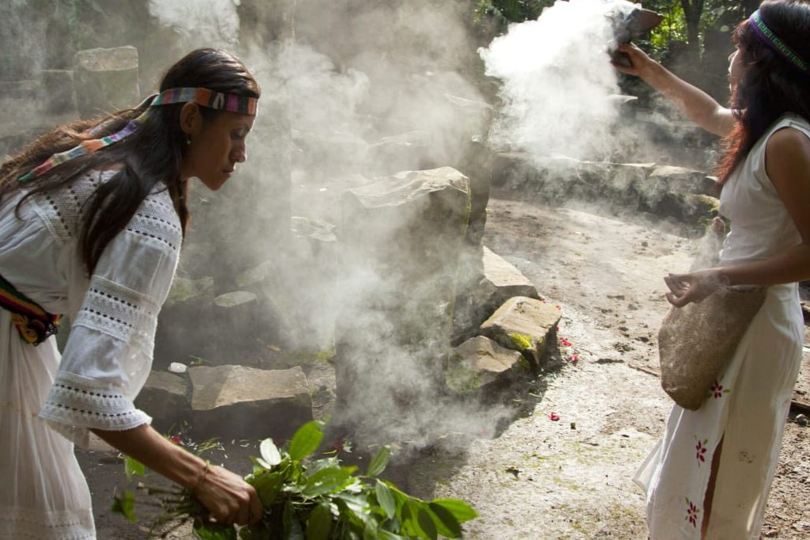
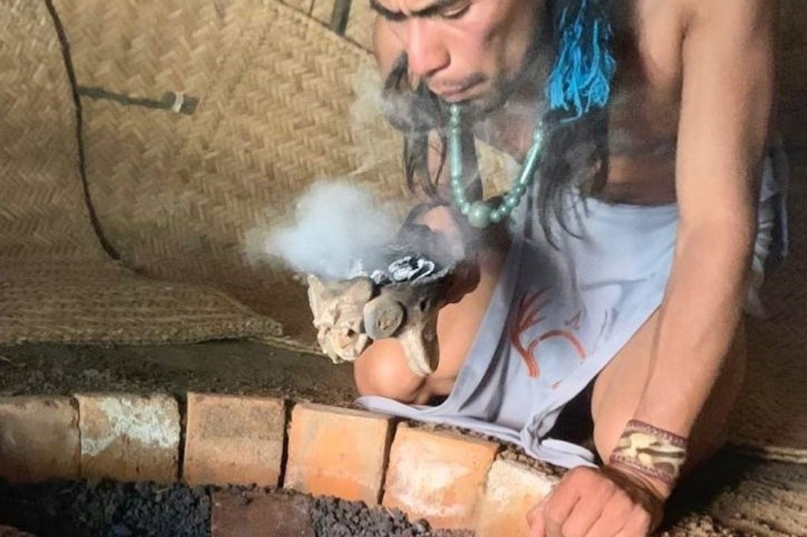
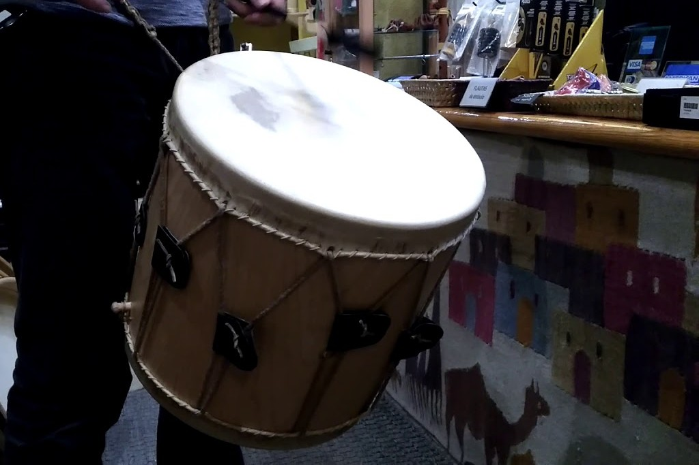
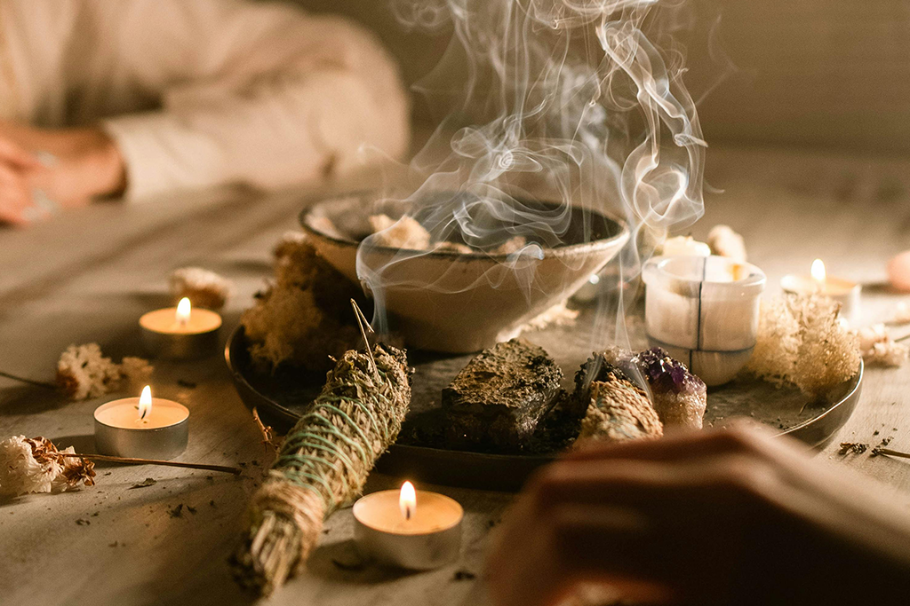
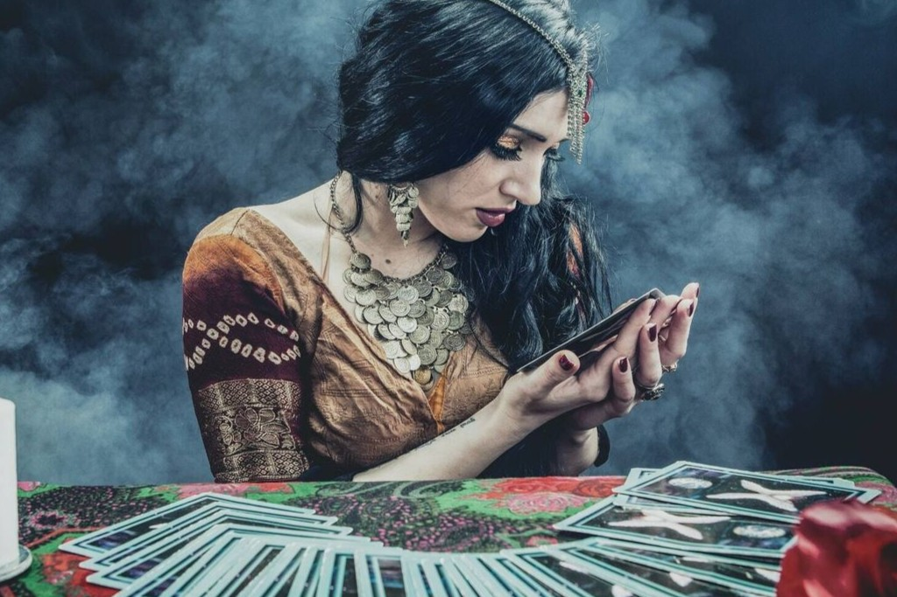

Los chamanes son figuras espirituales que, según diversas tradiciones, tienen la capacidad de comunicarse con el mundo de los espíritus a través de rituales y estados de trance. Suelen desempeñar roles de sanadores, guías espirituales y mediadores entre lo terrenal y lo sobrenatural
El chamanismo es una de las prácticas espirituales más antiguas de la humanidad, con raíces que se remontan a la prehistoria, Existen evidencias arqueológicas, como arte rupestre y objetos rituales, que sugieren que el chamanismo ha estado presente por más de 30,000 años, A lo largo de la historia, el chamanismo ha evolucionado y ha influenciado diversas tradiciones religiosas y espirituales.
Se basan en la creencia de que las enfermedades tienen un origen espiritual. Los chamanes utilizan plantas medicinales, cantos y danzas para restaurar el equilibrio energético del paciente
Son experiencias en las que el chamán entra en un estado alterado de conciencia, generalmente inducido por el sonido de tambores o el uso de plantas sagradas, para comunicarse con espíritus o recibir guía
Se realiza para pedir protección, consejo o sanación. Puede incluir ofrendas, rezos y el uso de elementos simbólicos como fuego o agua

Los tambores representan el latido de la Tierra, los sonajeros ayudan a limpiar energías negativas y los amuletos sirven como protección contra fuerzas malignas
Se lleva a cabo con humo de plantas como el copal o la salvia, baños con hierbas o incluso el uso de sonidos para eliminar energías negativas
Se basa en la interpretación de sueños, señales de la naturaleza o el uso de objetos como piedras, caracoles o cartas para obtener información sobre el futuro
Los instrumentos chamánicos son herramientas esenciales para los rituales de sanación, conexión espiritual y trance, a continuacion te presentaremos unos de ellos
Tambor chamánico: Representa el latido de la Tierra y se usa para inducir estados de trance.
Sonajero o maraca: Ayuda a limpiar energías negativas y a llamar a los espíritus.
Tabaco, copal o palo santo: Se queman para limpiar el ambiente y conectar con el mundo espiritual.